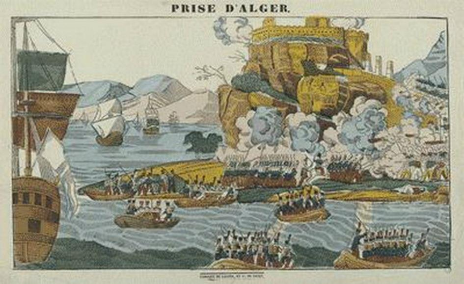
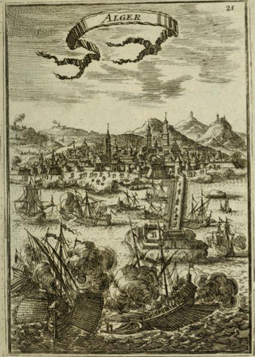

« Chose étrange et bien vraie pourtant, ce qui manque à la France en Alger, c’est un peu de barbarie. Les Turcs allaient plus vite, plus sûrement et plus loin ; ils savaient mieux couper les têtes. La première chose qui frappe le sauvage, ce n’est pas la raison, c’est la force »
Victor Hugo dans « Le Rhin » en 1842
Lors de ses voyages en Algérie dans le but de « panser les plaies du passé », l’inénarrable François Hollande a reconnu publiquement que : « Pendant cent trente-deux ans, l’Algérie a été soumise à un système profondément injuste, brutal et destructeur. Je reconnais ici les souffrances que le système colonial a infligé au peuple algérien »… et encore : « La France est responsable d’une colonisation injuste et brutale ; elle est responsable des massacres d’innocents algériens à Sétif, Guelma et Khenattra »... tout en se gardant bien, de dénoncer ces centaines d’autres massacres d’innocents européens qui ont précédé les représailles et ces autres milliers de massacres d’innocents européens et musulmans fidèles à la France qui ont jalonné huit années de terrorisme aveugle et lâche.
Par cette indécente sélectivité minable, ce Chef d’état honni a injurié et humilié –non les Français d’Algérie, comme se plaisent à dire certains idiots utiles de service- mais, tout simplement, la France, son peuple, son Histoire, son honneur ainsi que la mémoire et le sacrifice de ses soldats.
Depuis lors, un florilège de réactions issues du milieu « progressiste » n’a pas manqué de vilipender en des termes diffamants l’œuvre colonisatrice de la France en Algérie. C’est ainsi, qu’encouragé par l’attitude et les déclarations du matamore élyséen remisé au placard depuis, ce petit monde de « moralistes à la conscience pure » n’a eu de cesse de monter les enchères en comparant le colonialisme français à l’esclavagisme… Il n’en fallut pas plus à son successeur « Choupinet 1er » ou « Jupiter », pour s’illustrer à son tour dans cette même Algérie si convoitée par les chefs d’état français en quête de nouveaux électeurs…
Le 15 février 2017, « Jupiter » déclarait à la télévision algérienne : « La colonisation fait partie de l’histoire française. C’est un crime, un crime contre l’humanité, c’est une vraie barbarie. Et ça fait partie de ce passé que nous devons regarder en face, en présentant nos excuses à l’égard de ceux envers lesquels nous avons commis ces gestes ».
Le 13 septembre 2018, le dénouement de tant d’infamies s’est concrétisé par la reconnaissance officielle par « Jupiter » de la responsabilité de l’État dans la disparition à Alger en 1957 de Maurice AUDIN, militant communiste pro-FLN. Soupçonné d’héberger des terroristes de la cellule armée du Parti communiste algérien, AUDIN fut arrêté le 11 juin 1957 lors de la « bataille d’Alger » par les parachutistes du général MASSU et mourra lors de sa détention.
Ce nouvel acte de « repentance » de « Jupiter » est conforme à ses prises de position antérieures sur « l’affaire algérienne ». En novembre 2016, dans un entretien au Point, il avait déclaré : « En Algérie, il y a eu la torture, mais aussi l’émergence d’un Etat de richesses de classes moyennes, c’est la réalité de la colonisation ».
Monsieur MACRON, dénigrer l’histoire de son pays, de son passé, sa grandeur, le sacrifice de ses aînés et de ses soldats est un acte criminel. Nous n’avons pas à tronquer notre histoire pour faire plaisir à telle minorité, telle association au « cœur sur la main » ou tel parti politique. « Dans cette rumination morose, les nations européennes oublient qu’elles, et elles seules, ont fait l’effort de surmonter leur barbarie pour la penser et s’en affranchir » écrivait Pascal Bruckner. Que ceux qui s’adonnent à ce type d’autoflagellation jouissive n’oublient pas cette mise en garde de Henri de Montherlant : « Qui a ouvert l’égout périra par l’égout. »
Ce dénigrement perpétuel de la France et de son passé colonial par nos « bien pensants », présidents en tête, martyrocrates de profession, faussaires de l’antiracisme, est le pire danger auquel elle est confrontée.
Ces déclarations infamantes, basées sur une méconnaissance totale du sujet, inspirées de surcroît par un sentiment anti-français, nous dépeignent, aujourd’hui encore, « l’Algérie coloniale, comme ayant été l’apartheid » et les soldats qui ont écrit son histoire dans le sang et les larmes, des « barbares ». Ces « historiens » de bas étage nous « rappellent » que « la colonisation était contraire aux lois de la République, notamment par son côté ségrégationniste » (sic). Quelle hérésie !
Si Charles X fut à l’origine de « l’expédition d’Alger », c’est précisément la République (la IIe) qui ordonna la conquête de l’Algérie. Cependant, à cette époque il n’était aucunement question de colonisation. Ce que Charles X -et avec lui l’Europe- voulait, c’était supprimer la piraterie en Méditerranée. En effet, toute la côte « barbaresque », de l’Égypte à Gibraltar, n’était qu’une seule et très active base d’opérations de piraterie dirigée contre la France, l’Espagne, l’Italie et surtout contre les convois chargés de marchandises qui sillonnaient la méditerranée.
C’est pour réduire cette piraterie que les premières incursions chrétiennes de représailles sur les côtes algériennes virent le jour au début du XVIe siècle et permirent aux Espagnols, sous la conduite de Pedro Navarro, d’investir Alger et de libérer trois-cents captifs chrétiens. Pour les en chasser, les algériens firent appel en 1515 aux corsaires turcs qui occupaient depuis 1513 le port de Djidjelli en Kabylie, notamment à un pirate sanguinaire, Kheir-Ed-Din, dit Barberousse en raison de la couleur de sa barbe. Ils occupèrent Alger et y instaurèrent un régime de terreur, exécutant ceux qui refusaient la nouvelle domination turque. Ainsi, par l’entremise de ce pirate que le sultan de Stamboul avait nommé émir des émirs, beylerbey, la Turquie prit officiellement pied dans le bassin occidental de la Méditerranée. Alger était pour elle une base avancée, ce que Gibraltar et Singapour furent plus tard pour l’Angleterre. De là, elle pouvait porter des coups très durs à la navigation chrétienne. Avec ces ressources, Barberousse et les Turcs chassèrent les Espagnols et conquirent le territoire algérien, allant jusqu’à placer le pays sous la dépendance nominale du sultan de Constantinople. Le Maghreb était devenu une province turque.
Forte de ses soixante bâtiments dont trente-cinq galères, la flotte algérienne écumait la Méditerranée et amassait des trésors. De plus une autre source énorme de profits était constituée par l’esclavage.
Il s’exerçait, pour une part, aux dépens de populations d’Afrique noire que l’on enlevait après avoir investi les villages et, pour une autre part, de la piraterie.
L’avantage de cette dernière résidait dans l’échange des esclaves chrétiens contre de fortes rançons. Un bénédictin espagnol, le Père Haedo, estimait qu’Alger devait avoir 60 000 habitants et 25 000 esclaves chrétiens.
Quand Charles X décida l’occupation d’Alger, la Prusse, l’Autriche, la Russie, les grands de l’heure, approuvèrent sans commentaires particuliers. C’est ainsi qu’en cette aube du 25 mai 1830, la France partit pour l’Algérie… sans se douter qu’elle allait y rester 132 ans.
Aussi quand nos « historiens de salons » s’élèvent contre « la saisie de terres, l’annexion de territoires, l’évangélisation, le pillage des ressources minières » (sic), ils ne peuvent qu’engendrer le ridicule…
Concernant « la saisie de terres », ils voudraient nous faire croire que les premiers pionniers firent main basse sur de riches et fertiles terres agricoles enlevées de force aux indigènes… alors qu’en réalité, ils découvrirent un désert, une lande hérissée de broussailles au bord d’un marais pestilentiel où pullulaient les moustiques.
Sur l’évangélisation, nos « historiens » se sont encore fourvoyés… S’ils reprochent à la France cette annexion, ils « oublient » cependant de signaler que ce sont les ascendants des « victimes du colonialisme français » qu’ils défendent aujourd’hui avec tant de véhémence, qui sont les véritables colonialistes.
- Qui a annexé ce pays autrefois habité par la race berbère et qui faisait alors partie intégrante du monde occidental ?
- Qui a soumis par la force ce même peuple berbère, majoritairement chrétien, à la conversion à l’Islam ?
Quant au « pillage des ressources minières », que d’infamies !
C’est la France qui a découvert et mis en valeur à grand frais les zones pétrolifères et les gisements de gaz du Sahara prétendument destinés à assurer son indépendance… mais qui, en réalité, n’ont eu de cesse d’enrichir les apparatchiks algériens…
Durant l’épisode sanglant de la guerre d’Algérie, le leitmotiv constant des responsables du FLN était que la rébellion se justifiait par le besoin de plus de justice, de bonheur et de liberté pour la « malheureuse » population musulmane. Cependant au cours d’une audience qu’il accorda à un haut prélat d’Algérie, en septembre 1961, Sa Sainteté Jean XXIII prononça : « Vous avez vos idées, c’est bien, mais moi j’ai constaté une chose : c’est que chaque fois que la France se retire d’un pays, la liberté et la civilisation reculent. »
Que ces paroles du Pape inspirent à nos gouvernants de fécondes réflexions !

Partager cette page